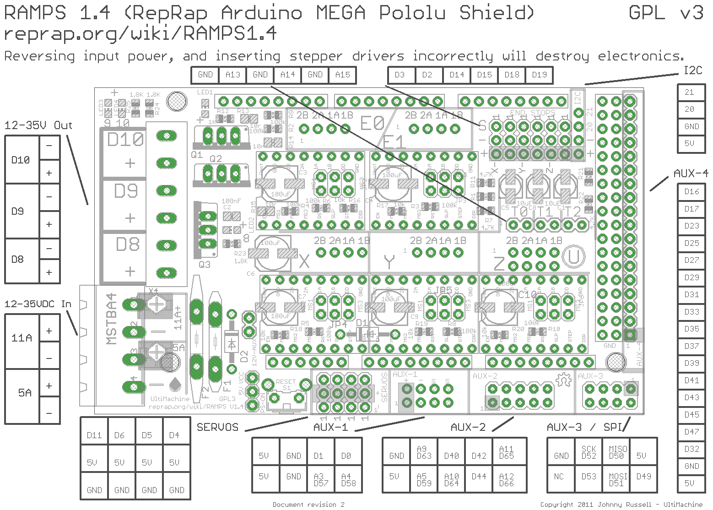
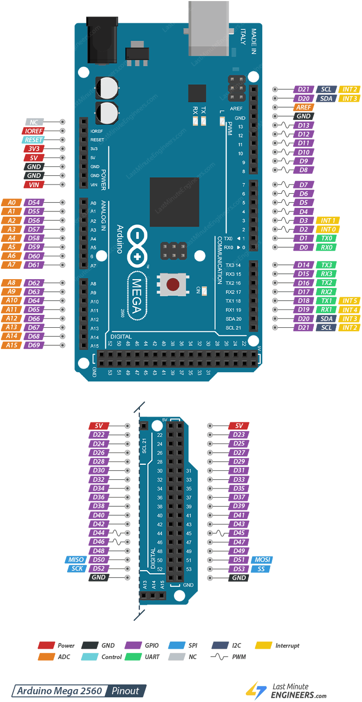
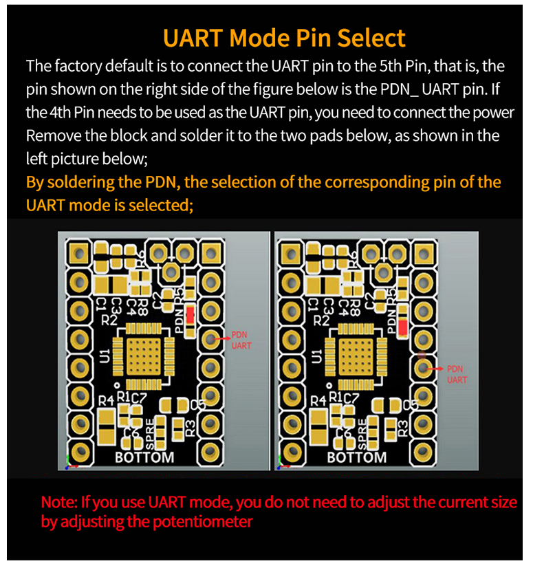
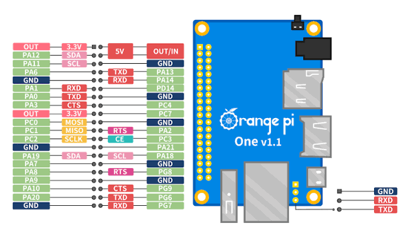

Куда что воткнуто и как называется на схеме.
RAMPS 1.4 — расположение разъёмов

Arduino Mega 2560 — пиноут

D40, D49, D53) в имя порта AVR (PG1, PL0, PB0), потому что Klipper в uart_pin хочет именно второе. Подробнее — «Линия UART к драйверам». Полная версия в векторе: arduino-mega-2560-pinout.pdf — масштабируется без потери качества.Разводка модуля TMC2209 отличается между производителями, поэтому здесь она нарисована разметкой, а не снята с чьей-то платы: позиции, которые действительно различаются, помечены как различающиеся.
TMC2209 против A4988 — что на какой позиции гнезда
Любая найденная в поиске картинка «TMC2209 pinout» показывает один вариант из нескольких и подаёт его как единственный. Две позиции из восьми на самом деле определяются паяльным джампером PDN на конкретном экземпляре модуля, а вход SPREAD у части производителей на гребёнку вообще не выведен. Поэтому рисунок ниже — не фотография чужой платы, а карта того, что различается: жёлтым помечено ровно то, что нельзя узнать иначе, чем прозвонкой своего модуля. Полный разбор с цитатами из документации производителей — в гайде, раздел «Джампер PDN: на каком выводе сидит PDN_UART».
- 1Счёт ведётся от EN, сверху вниз. Документация производителей модулей обычно считает наоборот, снизу от DIR — поэтому «5-й пин» в их формулировке и «4-я позиция» здесь означают одно и то же место: позицию, которая в разметке A4988/RAMPS называется MS3. Проверяйте, от какого конца считает источник, прежде чем паять.
- 2Жёлтым помечено то, что различается от модуля к модулю — позиции 4 и 5 в колонке управления и порядок выводов внутри каждой пары обмоток в силовой колонке (из-за него при замене A4988 на TMC2209 иногда приходится развернуть разъём мотора на 180°). Это не «неизвестно вообще», это «известно только про конкретный экземпляр» — и узнаётся прозвонкой за полминуты.
- 3У PDN_UART, MS1, MS2 и SPREAD внутри чипа есть подтяжки вниз (даташит:
DI (pd)). Неподключённый вход — это низкий уровень, а не «плавающий», и именно поэтому снятые перемычки MS дают адрес 0.
Питание выключено, USB отсоединён, модуль ВЫНУТ из гнезда — вне платы, иначе измерение испортит закоротка RESET/SLEEP на самой RAMPS. Мультиметр в режим прозвонки.
- Один щуп поставить на средний, общий пятачок джампера
PDN— тот, к которому капля припоя подходит с одной стороны. - Вторым щупом пройти по выводам колонки управления сверху вниз.
- Пищит ровно на одном выводе — это и есть PDN_UART вашего модуля, туда и садиться проводом. На остальных обрыв, и это нормально.
Дальше — снять перемычку микрошага под этой позицией (иначе она посадит будущую линию UART на +5 В) и проверить весь монтаж по шагам из гайда: «Джампер PDN: на каком выводе сидит PDN_UART».
В инструкциях сплошь и рядом встречается «два соседних вывода — это один и тот же PDN_UART, прозвоните их между собой, должен быть ноль». Исправный модуль эту проверку проваливает. Джампер выводит сигнал на одну из двух позиций, а не на обе сразу, поэтому между собой они звониться и не должны — обрыв здесь является нормой. Проверка выдаёт целую плату за бракованную, а если делать её с модулем, вставленным в гнездо, то и наоборот: RAMPS закорачивает позиции RESET и SLEEP прямо на плате и покажет ноль даже при пустом гнезде.
| № от EN | A4988 / разметка гнезда RAMPS | TMC2209 | Чем подтверждается |
|---|---|---|---|
| 1 | EN | EN | совпадает у всех модулей |
| 2 | MS1 | MS1 — микрошаг в standalone и адрес UART | даташит TMC2209, таблица MS1/MS2 |
| 3 | MS2 | MS2 — то же | там же |
| 4 | MS3 | PDN_UART или SPREAD — зависит от положения джампера PDN и от модели модуля | только прозвонкой своего экземпляра, не картинкой |
| 5 | RESET | PDN_UART или ничего — зависит от положения джампера PDN | только прозвонкой своего экземпляра, не картинкой |
| 6 | SLEEP | как правило вывода нет — у TMC2209 просто нет сигнала, которому здесь место; но и это стоит подтвердить прозвонкой своего модуля | провод, припаянный сюда, доходит через закоротку RAMPS ровно до 5-й позиции и там кончается — разбор в гайде, «Закоротка RESET/SLEEP на RAMPS» |
| 7 | STEP | STEP | совпадает у всех модулей |
| 8 | DIR | DIR | совпадает у всех модулей |
Следствие строки 6, которое объясняет чужой «работающий» монтаж: если джампер PDN стоит на 5-й позиции, то провод, припаянный к 6-й (SLEEP), через закоротку RAMPS всё-таки доходит до PDN_UART — и человек честно рассказывает, что у него так заработало. Если джампер стоит на 4-й, тот же самый монтаж упирается в изолированный узел и молчит на всех адресах. Отсюда взаимоисключающие инструкции в интернете — они обе правдивы, каждая про свой модуль. Таблица «MS1/MS2 → микрошаг и адрес» и разбор монтажа целиком — в разделе «Линия UART к драйверам».
TMC2209 — выбор режима UART на модуле

Одноплатник участвует в схеме одним USB-кабелем — но если лезть в его гребёнку, лучше знать, куда.
Orange Pi One — гребёнка GPIO

CR-Touch и клоны BLTouch — распиновка их собственного разъёма, не конкретной проводки на плате. Почему это разведено отдельно и почему цвету провода доверять нельзя — «Проверка проводов датчика перед первой подачей питания».
CR-Touch / BLTouch-клон — разъём датчика по ПОЗИЦИИ, не по цвету
Ниже — раскладка самого 5-контактного разъёма CR-Touch (в его штатной комплектации это два физических джека: 3-контактный «сервo»-разъём и 2-контактный «Z-stop»-разъём), считая ПО ПОЗИЦИИ слева направо, логотип Creality на модуле — вверх. Цвет изоляции проводов между производителями партии отличается; известный случай — синий/тёмно-синий провод вместо привычного коричневого на земле сервo-разъёма. Разбор инцидента, где доверие цвету стоило модуля, и методика проверки — в гайде, раздел выше.
С отключённым от всего модулем измерить сопротивление между контактами 2 (5V) и 1/4 (GND). У исправного модуля — заметно больше, чем десятки Ом (килоомы и выше). Значение в районе десятков Ом — верный признак пробитого стабилизатора/защиты внутри, модуль подавать питание не должен вообще: разбор конкретного случая и почему это не лечится «попробовать ещё раз покороче» — в гайде.